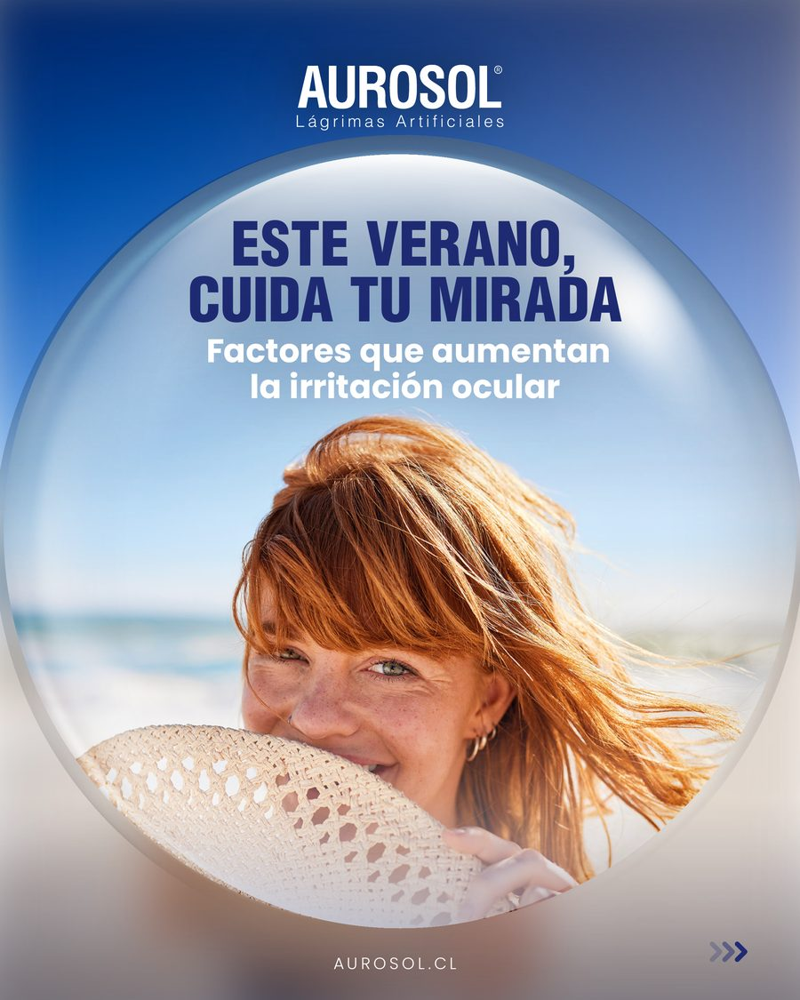
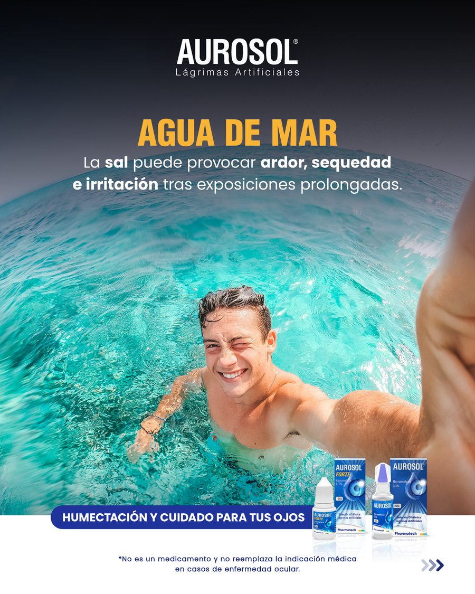
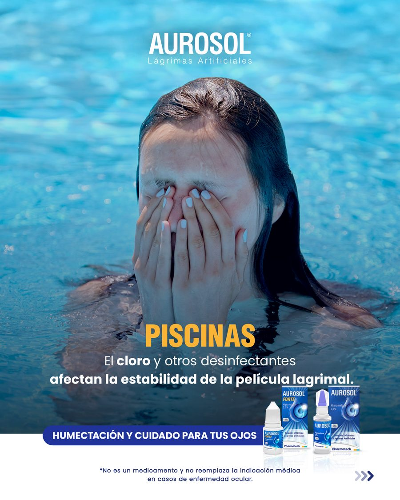
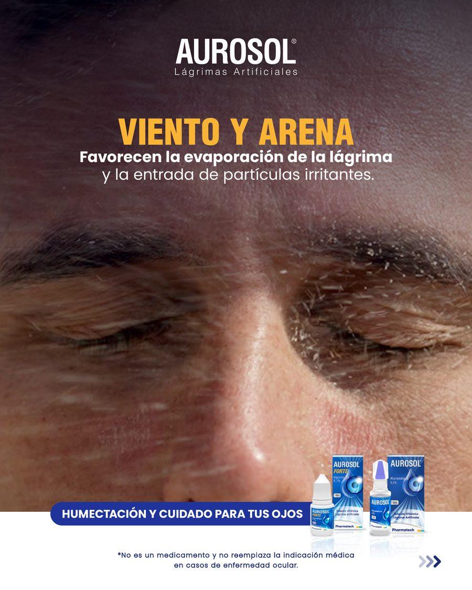
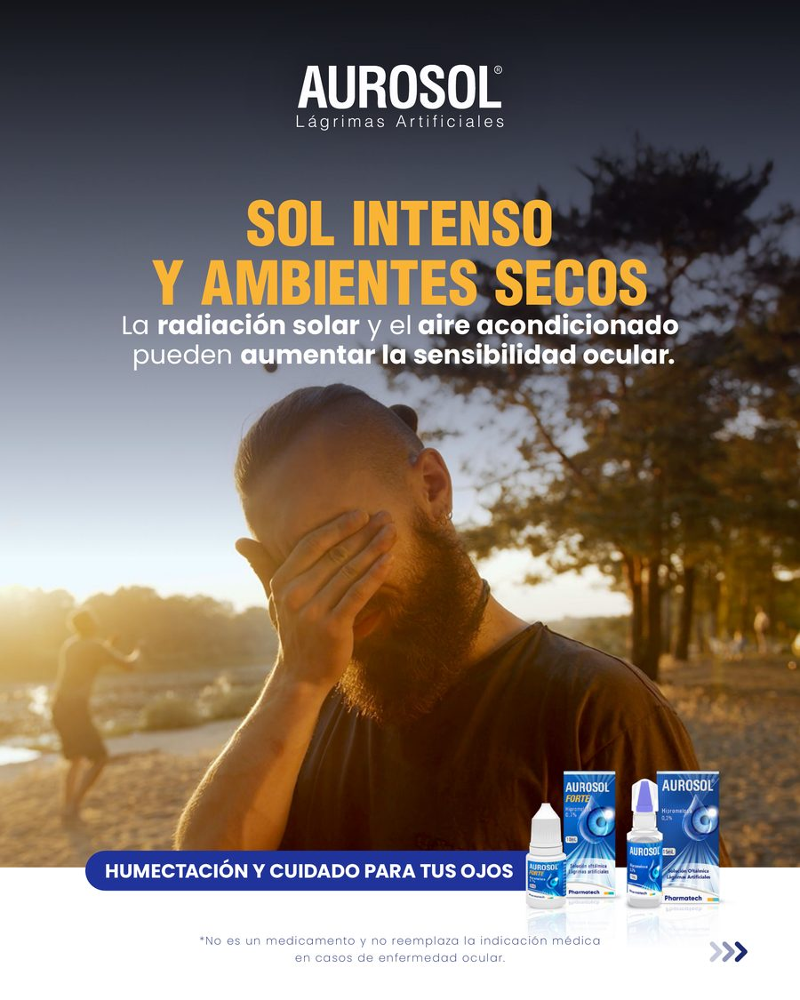
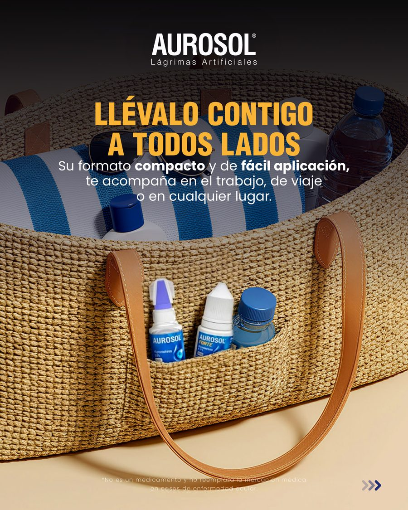
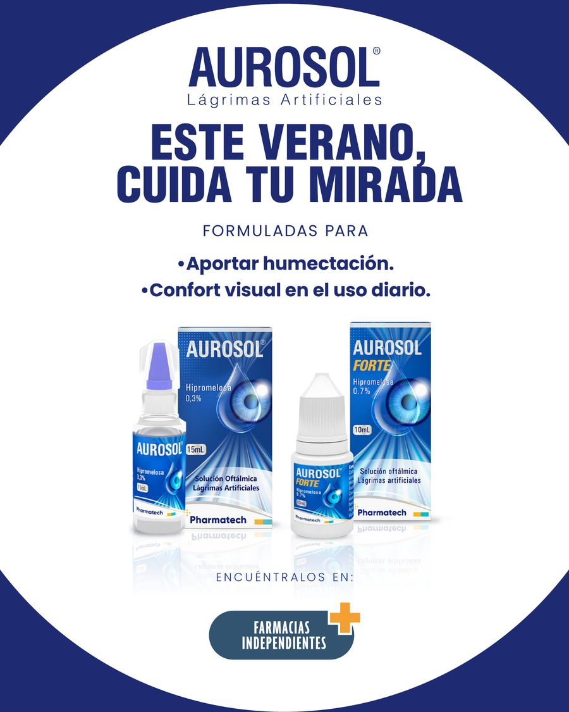

01
Aurosol — Estrategia, Spots & Campaña
ConceptoGuiones de SpotCarrusel RedesNaming
Desafío: Lanzar la línea Aurosol y Aurosol Forte comunicando salud ocular sin recurrir a afirmaciones médicas restrictivas ni mencionar a competidores consolidados.
Estrategia & Concepto: Sistema narrativo anclado al eje «Pantallas y Vida Saludable», apoyado por el claim eje: «Tus ojos son tu herramienta más valiosa. Cuídalos». Desarrollo de parrilla de contenido, guiones para formatos de video corto y copys de alto impacto.
Ejemplo de Copy publicado
«Que el aire acondicionado no seque tu mirada. Cuida tus ojos este verano con Aurosol. Hidratación y alivio en una sola gota.»
⇄ Desliza para ver el carrusel de campaña real (Aurosol)






